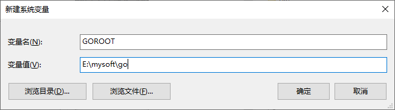
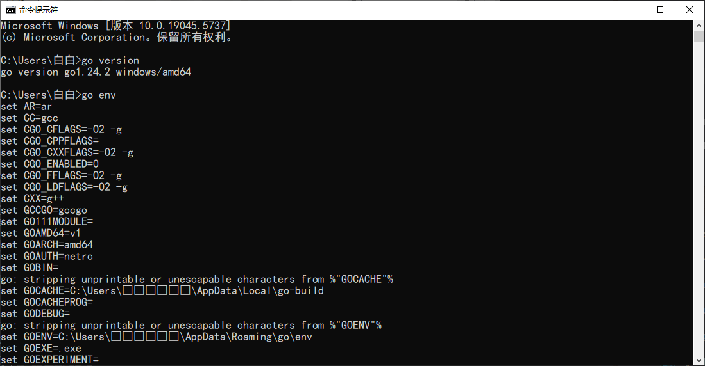

1.环境准备 下载Go环境
下载go环境：Go下载官网链接
找到自己想下载的版本，点击下载；
等待下载完成，放到自己自定义的目录，然后解压；
解压后得到如下文件夹
配置环境变量 得到完整的 Go 环境之后，需要配置 Go 的环境变量，右击此电脑–>属性–>高级系统设置–>环境变量，打开环境变量设置窗口。
需要新建两个环境变量配置
一个是 GOROOT ，这个就是 Go 环境所在目录的配置。
另一个是 GOPATH ，这个是 Go 项目的工作目录，你以后开发的代码就写在这个文件夹中。
1.GOROOT 为了使所有的计算机用户都可以使用 Go 环境，我们就在系统变量之中配置。点击==系统变量==下的==新建==，在变量名一栏输入 GOROOT ，在变量值一栏输入 你解压文件所在的目录E:\mysoft\go

2.GOPATH GOPATH和GOROOT的配置略有不同，我建议配置两个GOPATH目录，第一个用于放 Go 语言的第三方包，第二个用于放自己的开发代码。
我们来新建GOPATH。点击系统变量下的新建，在变量名一栏输入GOPATH，在变量值一栏输入任意两个目录，中间用英文分号隔开。
示例：E:\code\golangStudy\library;E:\code\golangStudy\workspace
3.Path 然后将新建的GOROOT配置到 Path 这个环境变量中去，在系统变量中找到 Path，点击编辑->新建，输入%GOROOT%\bin，点击确定。并将所有母窗口的确定全部点下，确保环境变量生效。
这样就配置完了，一路点击确定，直到桌面；
校验是否配置成功
windows+R 输入 cmd 打开终端，输入go version，如果输出如下图所示，则安装成功。

配置 GO111MODULE、GOPROXY、GOSUMDB Go默认的GOPROXY的值是：GOPROXY=https://proxy.golang.org,direct。这个goproxy在使用go get安装第三方库的时候会报错，导致无法下载成功，所以必须要修改一下。
比如改为：https://goproxy.io,direct （七牛镜像）或 https://mirrors.aliyun.com/goproxy（阿里云镜像）
1 2 3 4 5 6 7 8 9 10 11 #开启mod模式（项目管理需要用到） go env -w GO111MODULE=on#重新设置成七牛镜像源（推荐）或阿里镜像源（用原有的会比较慢） go env -w GOPROXY=https:go env -w GOPROXY=https:#关闭包的MD5校验 go env -w GOSUMDB=off#查看环境变量 go env
查看配置的环境变量 一、可以再次点击 此电脑-->属性>环境变量 查看
二、可以在cmd终端查看
1 2 echo %GOPATH%echo %GOROOT%
VSCODE安装GO工具 首先安装GO插件 Ctrl+Shift+X
在 VSCode 中按 Ctrl+Shift+P，输入 Go: Install/Update Tools，选择所有工具进行安装。
Goland配置 上述步骤完成，goland配置即完成
2.从main函数开始 分号可写可不写
package 程序包名
import多个可以使用括号括起来
1 2 3 4 5 6 7 8 9 10 11 package main import "fmt" func main () fmt.Println("Hello Go!" ) }
命令行操作
1 2 3 4 5 PS E:\code\golangStudy\workspace\grammarStudy> go run hello.go Hello Go! PS E:\code\golangStudy\workspace\grammarStudy> go build .\hello.goPS E:\code\golangStudy\workspace\grammarStudy> ./helloHello Go!
3.变量与常量 局部变量的声明 四种变量的声明方式
1 2 3 4 5 6 7 8 9 10 11 12 13 14 15 16 17 18 19 20 21 22 23 24 25 26 27 28 29 30 31 32 33 34 35 36 37 38 39 40 41 42 43 44 45 46 47 48 49 50 51 package mainimport "fmt" func main () var a int fmt.Println("a = " , a) fmt.Printf("type of a = %T\n" , a) var b int = 100 fmt.Println("b = " , b) fmt.Printf("type of b = %T\n" , b) var c = 200 fmt.Println("c = " , c) fmt.Printf("type of c = %T\n" , c) e := 100 fmt.Println("e = " , e) fmt.Printf("type of e = %T\n" , e) f := "acadsaf" fmt.Println("f = " , f) fmt.Printf("type of f = %T\n" , f) g := 3.14 fmt.Println("g = " , g) fmt.Printf("type of g = %T\n" , g) var xx, yy int = 11 , 22 fmt.Println(xx, yy) var aa, bb = 33 , "adas" fmt.Println(aa, bb) var ( cc = 44 dd = 3.14 ) fmt.Println(cc, dd) }
全局变量的声明 只能够使用方法123进行声明
多变量的声明 1 2 3 4 5 6 7 8 9 10 11 12 var xx, yy int = 11 , 22 fmt.Println(xx, yy) var aa, bb = 33 , "adas" fmt.Println(aa, bb) var ( cc = 44 dd = 3.14 ) fmt.Println(cc, dd)
常量 1 2 3 4 5 6 7 8 9 10 11 12 13 14 15 16 17 18 19 20 21 22 23 24 25 26 27 28 29 30 31 32 33 34 35 36 37 38 package mainimport "fmt" const ( BEIJING = 10 *iota SHANGHAI SHENZHEN ) const ( a, b = iota + 1 , iota + 2 c, d e, f g, h = iota * 2 , iota * 3 i, k ) func main () const length int = 100 fmt.Println("length = " , length) fmt.Println("BEIJING = " , BEIJING) fmt.Println("SHANGHAI = " , SHANGHAI) fmt.Println("SHENZHEN = " , SHENZHEN) }
4.函数声明 单返回值与多返回值 1 2 3 4 5 6 7 8 9 10 11 12 13 14 15 16 17 18 19 20 21 22 23 24 25 26 27 28 29 30 31 32 33 34 35 36 37 38 39 40 41 42 43 44 package mainimport "fmt" func foo1 (a string , b int ) int { fmt.Println("foo1" ) return 199 } func foo2 (a string , b int ) int , int ) { fmt.Println("foo2" ) cca := 100 ccb := 200 return cca, ccb } func foo3 (a string , b int ) int , r2 int ) { fmt.Println("foo2" ) r1 = 1000 r2 = 2000 return } func foo4 (a string , b int ) int ) { fmt.Println("foo2" ) r1 = 1000 r2 = 2000 return } func main () a := foo1("" , 1 ) fmt.Println("a = " , a) res1, res2 := foo2("" , 1 ) fmt.Println(res1, res2) res21, res22 := foo3("" , 1 ) fmt.Println(res21, res22) }
init函数与import导包 一般init在main函数前执行
先在workspace目录下执行
1 PS E:\code\golangStudy\workspace> go mod init workspace